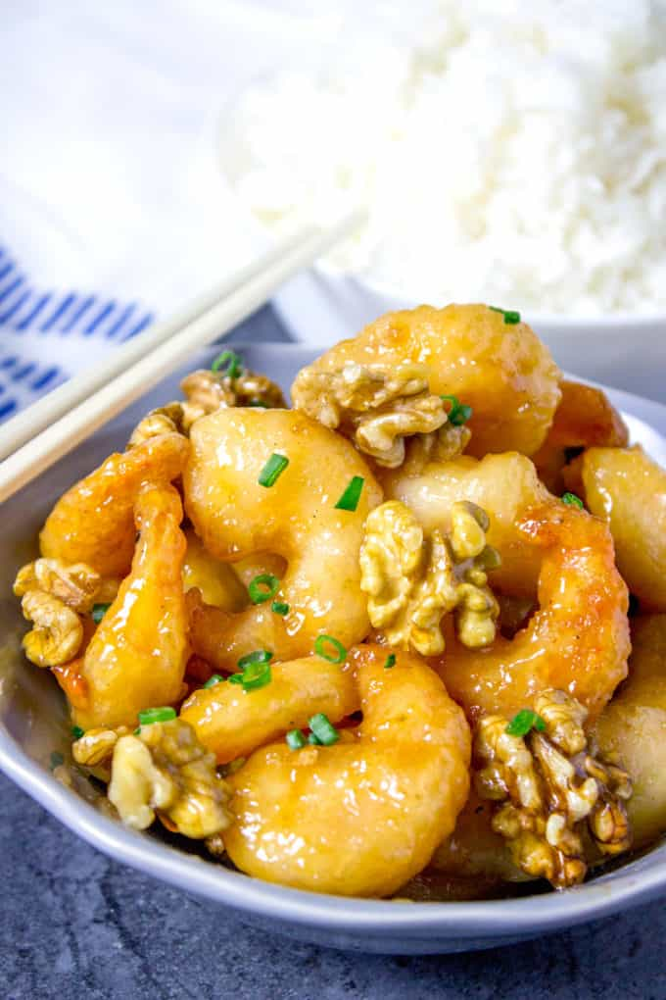

Honey Walnut Shrimp

Description
Honey Walnut Shrimp is a classic dish from Hong Kong that many Americans
know about thanks to Panda Express and many other. The dish is popular
at many Chinese restaurants as well. Our version of this slightly sweet
dish more closely represents the fast food version. Ones you may find
in Hong Kong have very lightly battered shrimp whereas Panda Express has
a thicker and heavier coating for that extra crispy bite. We went somewhere
in between using cornstarch and egg to give it a nice and crispy coating.
The sugared walnuts are our favorite part and make the dish so unique!
Ingredients
- 1 cup water
- 1 cup granulated sugar
- 1 cup walnuts
- 1 cup cornstarch
- 1/4 cup mayonnaise
- 2 tbsp. honey
- 2 tbsp. heavy cream
- Kosher salt
- Freshly ground black pepper
- 2 large eggs, beaten
- Vegetable oil for frying
Steps
- In a small saucepan over medium heat, combine water and sugar and bring to a boil.
Add walnuts and let boil for 2 minutes. Using a slotted spoon, remove walnuts and
let cool on a small baking sheet.
- Pat shrimp dry with paper towels and season lightly with salt and pepper. Place
eggs in a shallow bowl and cornstarch in another shallow bowl. Dip shrimp in eggs,
then in cornstarch coating well.
- In a large skillet over medium heat, heat 1” of oil. Add shrimp in batches and fry
until golden, 3 to 4 minutes. Remove with a slotted spoon and place on a paper towel
lined plate.
- In a medium bowl, whisk together mayonnaise, honey, and heavy cream. Toss shrimp in
sauce. Serve over rice with candied walnuts and garnish with green onions.